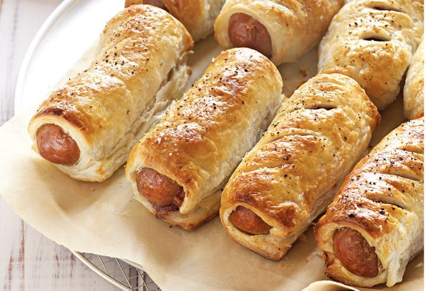

Pastry Sausage Rolls

Description:
This is a homemade recipe
for making pastry sausage rolls.
Ingredients:
- 1 tbsp olive oil
- 2 red onions, halved, thinly sliced
- 1 1/2 tbsp brown sugar
- 2 sheets frozen ready-rolled puff pastry, partially thawed
- 1 egg, lightly beaten
- 8 thick beef sausages
- Tomato chutney, to serve
- Salad greens, to serve
Steps
- Preheat oven to 200°C. Line a baking tray with baking paper. Heat oil in a non-stick frying pan over medium-high heat. Add onions and cook, stirring often, for 10 minutes or until tender. Add sugar. Cook, stirring, for 5 minutes or until caramelised. Set aside for 5 minutes to cool slightly.
- Cut each pastry sheet into 4 squares. Place 1 square on workbench. Brush 1 edge with egg. Spread 1 tablespoon onion mixture over pastry. Top with 1 sausage. Roll up pastry to enclose sausage, with egg-brushed edge on top. Press to secure. Place, seam side down, on tray. Repeat with remaining pastry, egg, onion mixture and sausages. Brush tops with egg. Score with a knife. Sprinkle with pepper.
- Bake for 20 to 25 minutes or until sausages are cooked through and pastry is golden. Serve with chutney and salad.